Adds additional trees to a gbm.object object.
gbm.more(object, n.new.trees = 100, data = NULL, weights = NULL, offset = NULL, verbose = NULL)
| object | A |
|---|---|
| n.new.trees | Integer specifying the number of additional trees to add
to |
| data | An optional data frame containing the variables in the model. By
default the variables are taken from |
| weights | An optional vector of weights to be used in the fitting
process. Must be positive but do not need to be normalized. If
|
| offset | A vector of offset values. |
| verbose | Logical indicating whether or not to print out progress and
performance indicators ( |
A gbm.object object.
# # A least squares regression example # # Simulate data set.seed(101) # for reproducibility N <- 1000 X1 <- runif(N) X2 <- 2 * runif(N) X3 <- ordered(sample(letters[1:4], N, replace = TRUE), levels = letters[4:1]) X4 <- factor(sample(letters[1:6], N, replace = TRUE)) X5 <- factor(sample(letters[1:3], N, replace = TRUE)) X6 <- 3 * runif(N) mu <- c(-1, 0, 1, 2)[as.numeric(X3)] SNR <- 10 # signal-to-noise ratio Y <- X1 ^ 1.5 + 2 * (X2 ^ 0.5) + mu sigma <- sqrt(var(Y) / SNR) Y <- Y + rnorm(N, 0, sigma) X1[sample(1:N,size=500)] <- NA # introduce some missing values X4[sample(1:N,size=300)] <- NA # introduce some missing values data <- data.frame(Y, X1, X2, X3, X4, X5, X6) # Fit a GBM set.seed(102) # for reproducibility gbm1 <- gbm(Y ~ ., data = data, var.monotone = c(0, 0, 0, 0, 0, 0), distribution = "gaussian", n.trees = 100, shrinkage = 0.1, interaction.depth = 3, bag.fraction = 0.5, train.fraction = 0.5, n.minobsinnode = 10, cv.folds = 5, keep.data = TRUE, verbose = FALSE, n.cores = 1) # Check performance using the out-of-bag (OOB) error; the OOB error typically # underestimates the optimal number of iterations best.iter <- gbm.perf(gbm1, method = "OOB")#>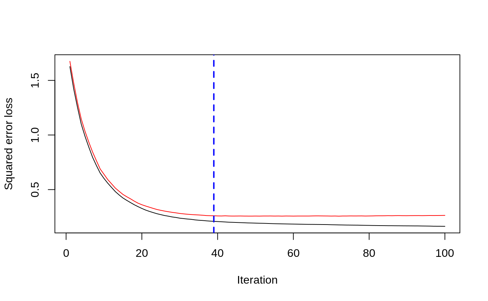print(best.iter)#> [1] 39 #> attr(,"smoother") #> Call: #> loess(formula = object$oobag.improve ~ x, enp.target = min(max(4, #> length(x)/10), 50)) #> #> Number of Observations: 100 #> Equivalent Number of Parameters: 8.32 #> Residual Standard Error: 0.00482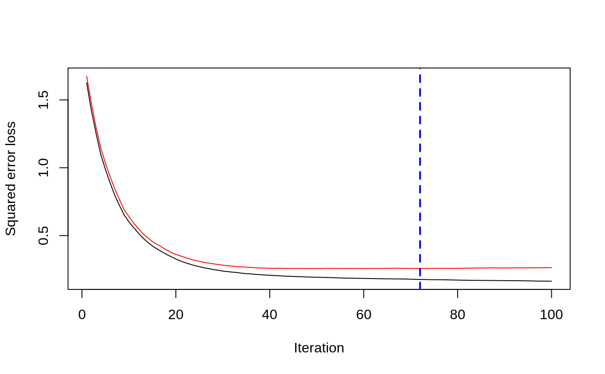print(best.iter)#> [1] 72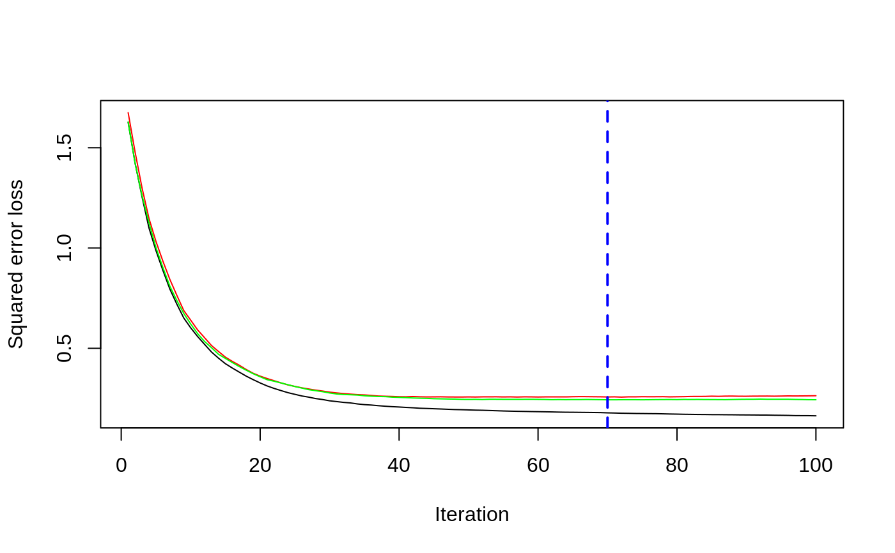print(best.iter)#> [1] 70# Plot relative influence of each variable par(mfrow = c(1, 2)) summary(gbm1, n.trees = 1) # using first tree#> var rel.inf #> X3 X3 77.63653 #> X2 X2 22.36347 #> X1 X1 0.00000 #> X4 X4 0.00000 #> X5 X5 0.00000 #> X6 X6 0.00000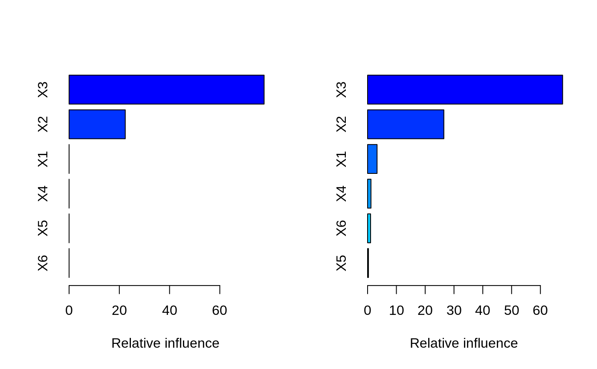#> var rel.inf #> X3 X3 67.7119268 #> X2 X2 26.4776500 #> X1 X1 3.2894907 #> X4 X4 1.1762229 #> X6 X6 1.0391610 #> X5 X5 0.3055486#> SplitVar SplitCodePred LeftNode RightNode MissingNode ErrorReduction Weight #> 0 2 1.50000000 1 5 9 250.57638 250 #> 1 1 0.78120367 2 3 4 37.35455 126 #> 2 -1 -0.18949436 -1 -1 -1 0.00000 41 #> 3 -1 -0.07328112 -1 -1 -1 0.00000 85 #> 4 -1 -0.11109654 -1 -1 -1 0.00000 126 #> 5 1 1.04599545 6 7 8 34.82483 124 #> 6 -1 0.03528368 -1 -1 -1 0.00000 61 #> 7 -1 0.14128717 -1 -1 -1 0.00000 63 #> 8 -1 0.08914029 -1 -1 -1 0.00000 124 #> 9 -1 -0.01177907 -1 -1 -1 0.00000 250 #> Prediction #> 0 -0.01177907 #> 1 -0.11109654 #> 2 -0.18949436 #> 3 -0.07328112 #> 4 -0.11109654 #> 5 0.08914029 #> 6 0.03528368 #> 7 0.14128717 #> 8 0.08914029 #> 9 -0.01177907#> SplitVar SplitCodePred LeftNode RightNode MissingNode ErrorReduction Weight #> 0 0 0.6583952396 1 2 3 0.5862803 250 #> 1 -1 -0.0005414893 -1 -1 -1 0.0000000 85 #> 2 -1 0.0127684504 -1 -1 -1 0.0000000 44 #> 3 3 48.0000000000 4 5 9 0.6988419 121 #> 4 -1 -0.0120865976 -1 -1 -1 0.0000000 32 #> 5 5 1.2224274612 6 7 8 0.7638308 53 #> 6 -1 0.0285211180 -1 -1 -1 0.0000000 11 #> 7 -1 -0.0010805051 -1 -1 -1 0.0000000 42 #> 8 -1 0.0050632280 -1 -1 -1 0.0000000 53 #> 9 -1 0.0052615051 -1 -1 -1 0.0000000 36 #> Prediction #> 0 0.0023471175 #> 1 -0.0005414893 #> 2 0.0127684504 #> 3 0.0005867285 #> 4 -0.0120865976 #> 5 0.0050632280 #> 6 0.0285211180 #> 7 -0.0010805051 #> 8 0.0050632280 #> 9 0.0052615051# Simulate new data set.seed(103) # for reproducibility N <- 1000 X1 <- runif(N) X2 <- 2 * runif(N) X3 <- ordered(sample(letters[1:4], N, replace = TRUE)) X4 <- factor(sample(letters[1:6], N, replace = TRUE)) X5 <- factor(sample(letters[1:3], N, replace = TRUE)) X6 <- 3 * runif(N) mu <- c(-1, 0, 1, 2)[as.numeric(X3)] Y <- X1 ^ 1.5 + 2 * (X2 ^ 0.5) + mu + rnorm(N, 0, sigma) data2 <- data.frame(Y, X1, X2, X3, X4, X5, X6) # Predict on the new data using the "best" number of trees; by default, # predictions will be on the link scale Yhat <- predict(gbm1, newdata = data2, n.trees = best.iter, type = "link") # least squares error print(sum((data2$Y - Yhat)^2))#> [1] 5201.051# Construct univariate partial dependence plots p1 <- plot(gbm1, i.var = 1, n.trees = best.iter) p2 <- plot(gbm1, i.var = 2, n.trees = best.iter) p3 <- plot(gbm1, i.var = "X3", n.trees = best.iter) # can use index or name grid.arrange(p1, p2, p3, ncol = 3)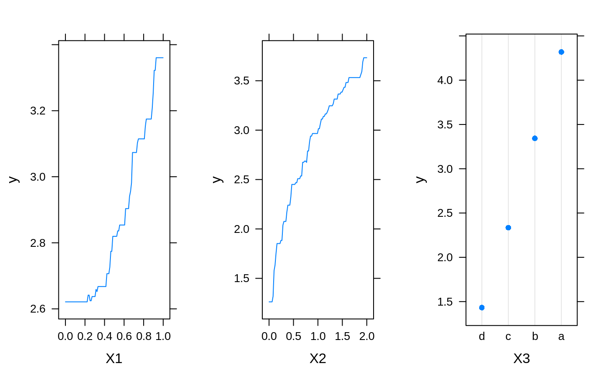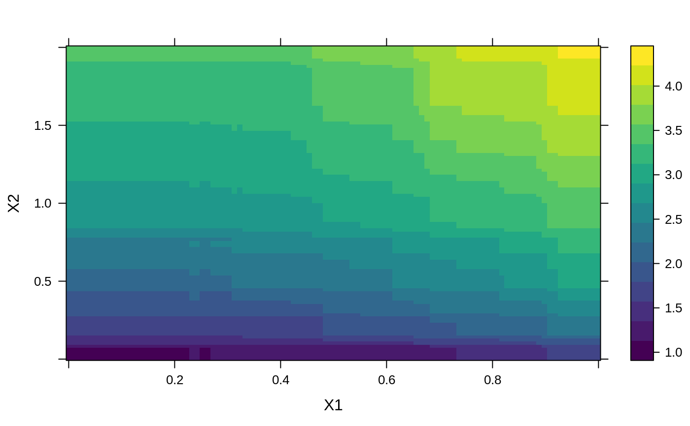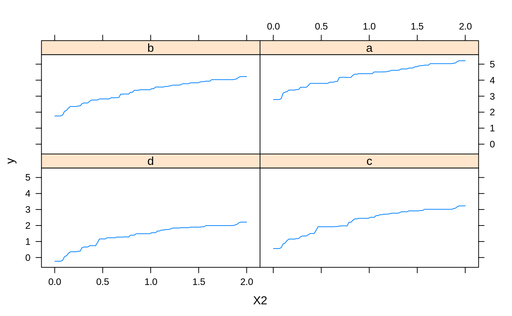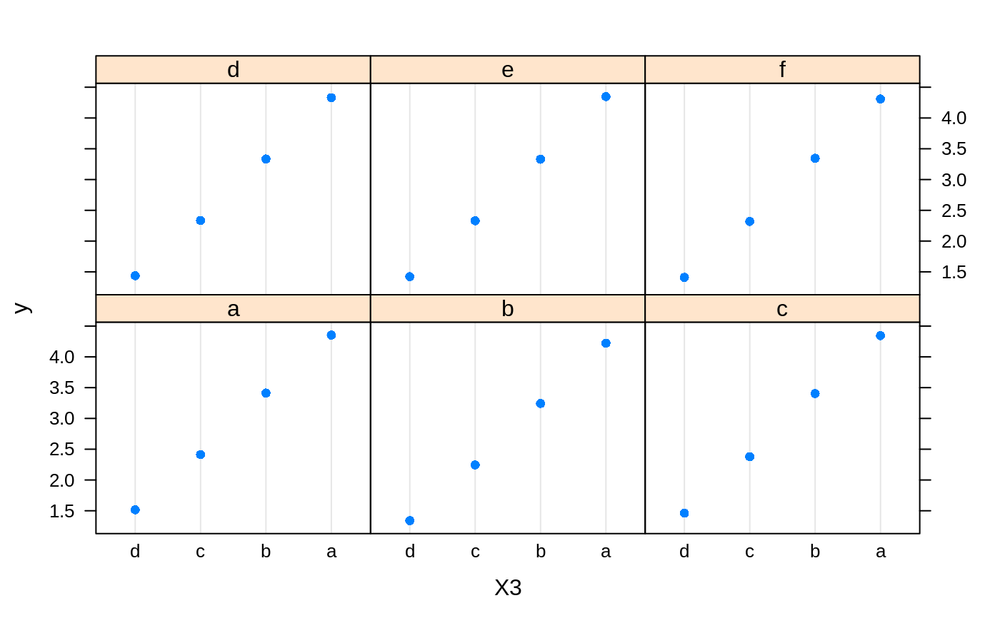# Construct trivariate partial dependence plots plot(gbm1, i.var = c(1, 2, 6), n.trees = best.iter, continuous.resolution = 20)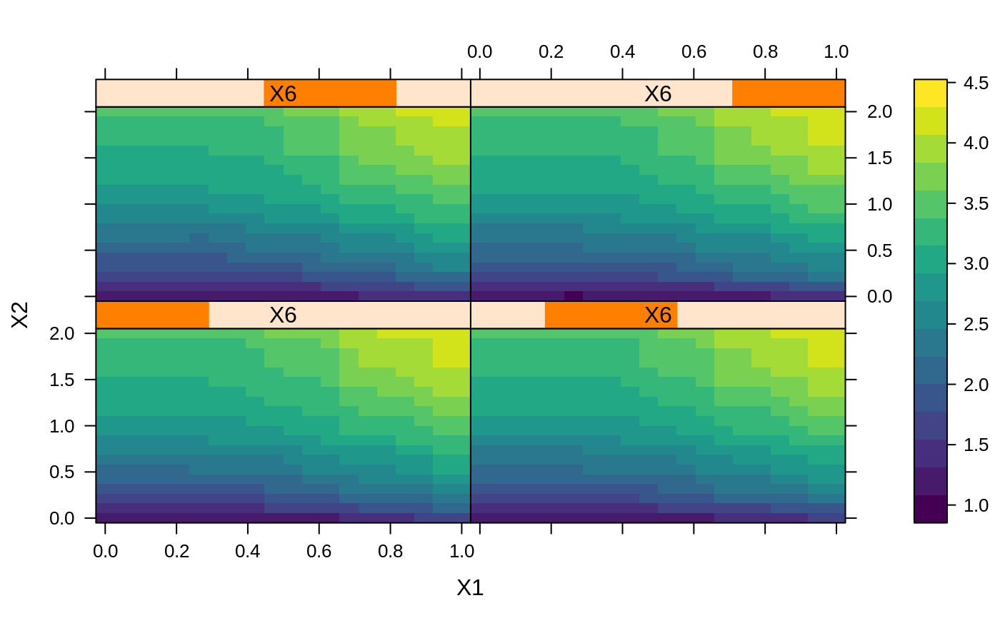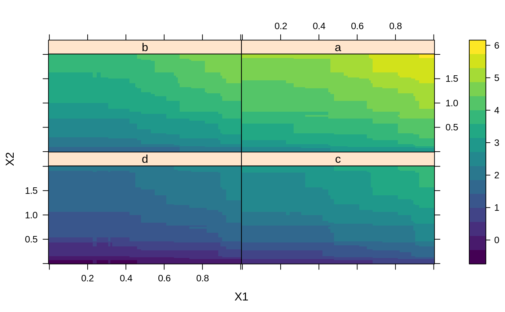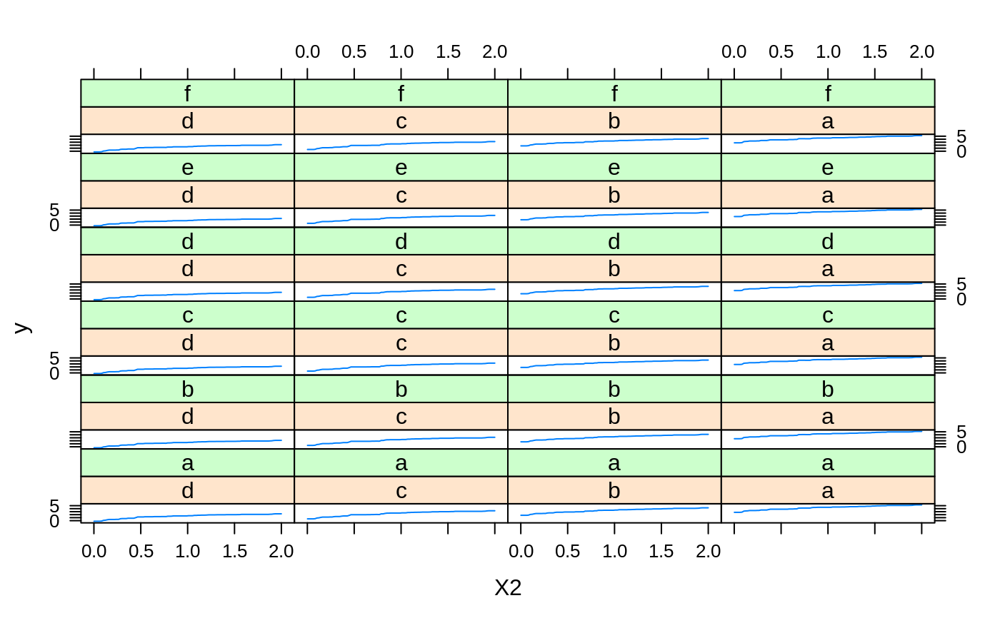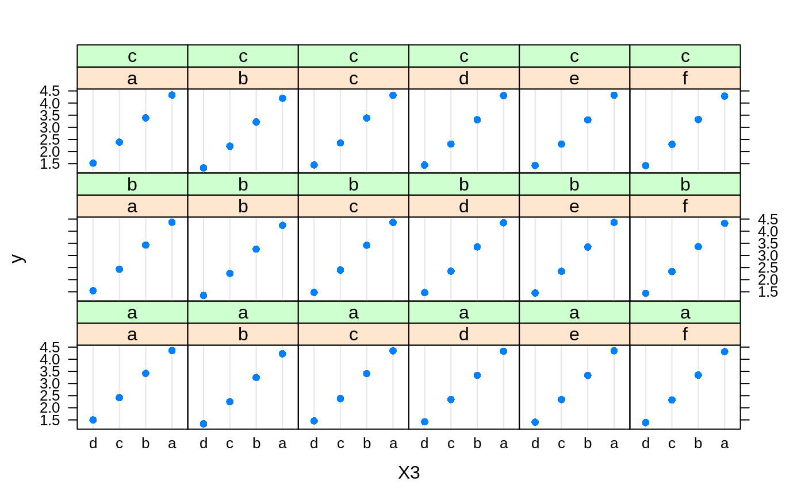# Add more (i.e., 100) boosting iterations to the ensemble gbm2 <- gbm.more(gbm1, n.new.trees = 100, verbose = FALSE)